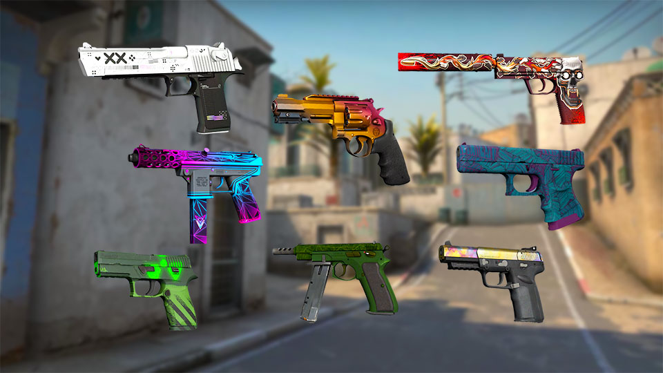

Premium Pistol Skins
Pistol skins offer excellent value in the CS:GO market. As starting weapons used in pistol rounds and eco buys, they receive significant in-game visibility despite their lower average price compared to rifles and knives.
Desert Eagle Skins
The Desert Eagle (Deagle) is the most popular pistol for skin collectors due to its high damage, distinctive appearance, and frequent use in highlight-worthy plays.
Notable Desert Eagle Skins:
- Blaze
- Released in The Dust Collection
- Distinctive flame design on black base
- Limited supply since the collection is discontinued
- Printstream
- Modern black and white design with animated elements
- Clean aesthetic with high contrast
- Popular among professional players
- Code Red
- Vibrant red and black cyberpunk aesthetic
- Part of the Horizon Case
- Visual design stands out in gameplay
USP-S & P2000 Skins
As the Counter-Terrorist starting pistols, the USP-S and P2000 feature prominently in pistol rounds. Players can equip either model, creating separate markets for their skins.
Notable USP-S & P2000 Skins:
- USP-S Kill Confirmed
- Features a striking target reticle design
- Strong demand due to visual appeal
- Highly visible during gameplay
- USP-S Neo-Noir
- Part of the Neo-Noir art series
- Purple and pink cyberpunk-noir aesthetic
- Popular in competitive play
- P2000 Ocean Foam
- Clean turquoise design
- Used in trade-up contracts for Desert Eagle Golden Koi
- Value tied to trade-up potential
Glock-18 Skins

As the Terrorist starting pistol, the Glock-18 appears in nearly every competitive match. Its skins are especially visible during pistol rounds, which attract high viewership. This glock also has a sticket one it, one of the most valuable in the game.
Notable Glock-18 Skins:
- Fade
- Available only from early CS:GO weapon cases
- Gradient of yellow, pink, and purple
- Highly sought after by collectors
- Water Elemental
- Vibrant art style with fire spirit design
- Popular budget-friendly option
- Consistently liquid in trading markets
- Bullet Queen
- Detailed artwork with anime-inspired character
- Part of the Prisma 2 Collection
- Popular for its unique visual style
Other Notable Pistols
- Five-SeveN
- Case Hardened (valuable blue patterns)
- Monkey Business (banana magazine design)
- Hyper Beast (colorful monster artwork)
- CZ75-Auto
- Victoria (gold filigree design)
- Xiangliu (dragon-inspired artwork)
- Yellow Jacket (wasp-themed design)
- Dual Berettas
- Cobalt Quartz (blue crystalline pattern)
- Hemoglobin (blood-red design)
- Marina (nautical blue and white pattern)
Investment Considerations
When adding pistol skins to your investment portfolio, consider these factors:
- First-Round Visibility
- Pistols get guaranteed exposure in pistol rounds
- Desert Eagle sees significant play in eco rounds
- CT vs. T side usage affects visibility rates
- Price-to-Prestige Ratio
- Pistols offer lower entry points than knives and rifles
- Some rare pistol skins outperform higher-tier weapons
- Greater quantity can be purchased for diversification
- Collection Status
- Discontinued collections like Dust and Assault appreciate faster
- Older case skins may benefit from case price increases
- Limited-time operation drops become scarcer over time